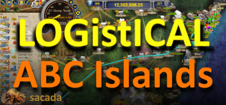

LOGistICAL: ABC Islands
LOGistICAL: ABC Islands
Details
|  | |
| Playtime | Not Played |
| Last Activity | Never |
| Added | 17/04/2020 |
| Modified | Never |
| Completion Status | Not Played |
| Source | Steam |
| Platform | PC |
| Release Date | 04/05/2018 |
| Community Score | 63 |
| Critic Score | |
| User Score | |
| Genre |
Casual Free to Play Indie Strategy |
| Developer |
Sacada |
| Publisher |
Sacada |
| Feature |
Achievements Cloud saves Leaderboards Single Player Stats |
| Links |
PCGamingWiki Community Hub Discussions Guides Achievements Store Page News |
Description
LOGistICAL: ABC Islands is an introduction to a large open-world,
strategy, puzzle game where you transport different cargoes to
complete all the towns throughout the ABC Islands of Aruba, Bonaire
and Curacao.
* FREE LOGistICAL: ABC Islands (including Steam achievements)
* FREE LOGistICAL: Xmas 2017 (including Steam achievements)
* FREE LOGistICAL: Isle of Man
* FREE LOGistICAL: Flinders Island
* Over 140 different supply chains
* Supply and finish many large cities
* Work your way through the long complex maze of road enhancements to finally allow all your large trucks access across the countries and islands
* Many, many other small and large puzzles and situations to complete.
LOGistICAL: ABC Islands brings you all the fun and puzzling of LOGistICAL with even more towns, more puzzles and much more to do.
THIS GAME DOES NOT REQUIRE THE ORIGINAL LOGISTICAL GAME TO PLAY.
Over 60 towns to complete in the ABC Islands with hundreds of additional FREE towns to play throughout the planet.
LOGistICAL: ABC Islands game covers the islands of Aruba, Bonaire and Curacao including instructions on how to play.
There are many obstacles and deliveries to make.
...
LOGistICAL: ABC Islands is an independent, standalone game independent from the main LOGistICAL game (and other add-ons).
It has its own money, trucks and of course, challenges.
...
LOGistICAL is a large open-world, strategy, puzzle game where you transport different cargoes to complete all the towns throughout the country.
The whole game is a huge puzzle while each town is its own little piece of puzzling. There are over 1,000 towns to complete.
Plenty of towns are easy enough. Some take complex planning. Do them in your own order. Get bonuses for completing regions and contracts.
Some cargoes are easy to get. Others you have to create in industries. Use existing industries and build your own.
The further you get from the start the more strategies you have to use.
Pimp up your trucks with bonuses. Last truck delivering gets the bonus.
The towns and map are to scale. Current or historical industry placement. You could even say that playing is educational.
There is plenty more to keep you on your toes.
Towns consume the cargoes you are trying to get to completion.
Big trucks are great for moving lots of stuff, but can't travel everywhere.
There are lots of broken roads that need deliveries.
Upgrade the industries for better exponential throughput.
Cargo stores can sure come in handy.
What! I can't take my big trucks across the water on a ferry.
... and what is with those quarantine checkpoints?
Complete towns, roads, industries, contracts, regions and states for lots of in-game and Steam achievements.
* FREE LOGistICAL: ABC Islands (including Steam achievements)
* FREE LOGistICAL: Xmas 2017 (including Steam achievements)
* FREE LOGistICAL: Isle of Man
* FREE LOGistICAL: Flinders Island
* Over 140 different supply chains
* Supply and finish many large cities
* Work your way through the long complex maze of road enhancements to finally allow all your large trucks access across the countries and islands
* Many, many other small and large puzzles and situations to complete.
LOGistICAL: ABC Islands brings you all the fun and puzzling of LOGistICAL with even more towns, more puzzles and much more to do.
THIS GAME DOES NOT REQUIRE THE ORIGINAL LOGISTICAL GAME TO PLAY.
Over 60 towns to complete in the ABC Islands with hundreds of additional FREE towns to play throughout the planet.
LOGistICAL: ABC Islands game covers the islands of Aruba, Bonaire and Curacao including instructions on how to play.
There are many obstacles and deliveries to make.
...
LOGistICAL: ABC Islands is an independent, standalone game independent from the main LOGistICAL game (and other add-ons).
It has its own money, trucks and of course, challenges.
...
LOGistICAL is a large open-world, strategy, puzzle game where you transport different cargoes to complete all the towns throughout the country.
The whole game is a huge puzzle while each town is its own little piece of puzzling. There are over 1,000 towns to complete.
Plenty of towns are easy enough. Some take complex planning. Do them in your own order. Get bonuses for completing regions and contracts.
Some cargoes are easy to get. Others you have to create in industries. Use existing industries and build your own.
The further you get from the start the more strategies you have to use.
Pimp up your trucks with bonuses. Last truck delivering gets the bonus.
The towns and map are to scale. Current or historical industry placement. You could even say that playing is educational.
There is plenty more to keep you on your toes.
Towns consume the cargoes you are trying to get to completion.
Big trucks are great for moving lots of stuff, but can't travel everywhere.
There are lots of broken roads that need deliveries.
Upgrade the industries for better exponential throughput.
Cargo stores can sure come in handy.
What! I can't take my big trucks across the water on a ferry.
... and what is with those quarantine checkpoints?
Complete towns, roads, industries, contracts, regions and states for lots of in-game and Steam achievements.